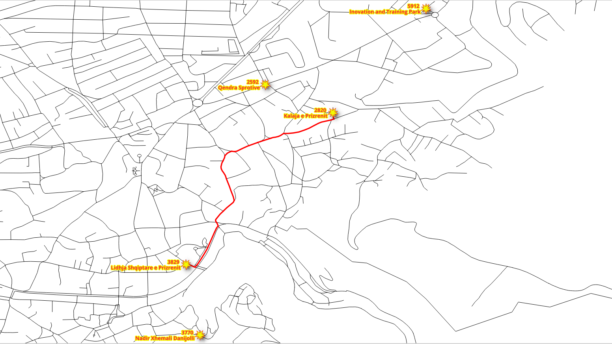
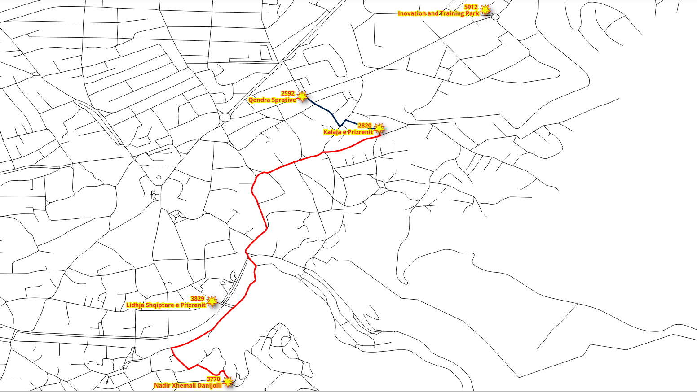
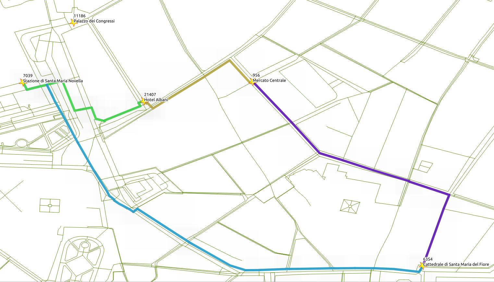
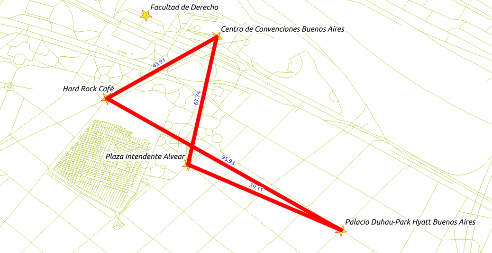

5. pgRouting Algorithms¶

pgRouting was first called pgDijkstra, because it implemented only shortest path search with Dijkstra algorithm. Later other functions were added and the library was renamed to pgRouting.
Chapter Contents
5.1. pgr_dijkstra¶
Dijkstra algorithm was the first algorithm implemented in pgRouting. It doesn’t
require other attributes than id, source and target ID and cost
and reverse_cost.
You can specify when to consider the graph as directed or undirected.
Signature Summary
pgr_dijkstra(edges_sql, start_vid, end_vid [, directed])
pgr_dijkstra(edges_sql, start_vid, end_vids [, directed])
pgr_dijkstra(edges_sql, start_vids, end_vid [, directed])
pgr_dijkstra(edges_sql, start_vids, end_vids [, directed])
RETURNS SET OF (seq, path_seq [, start_vid] [, end_vid], node, edge, cost, agg_cost)
OR EMPTY SET
Description of the parameters can be found in pgr_dijkstra.
Note
- Many pgRouting functions have
sql::textas one of their arguments. While this may look confusing at first, it makes the functions very flexible as the user can pass aSELECTstatement as function argument as long as the returned result contains the required number of attributes and the correct attribute names. - Most of pgRouting implemented algorithms do not require the network geometry.
- Most of pgRouting functions do not return a geometry, but only an ordered list of nodes or edges.
Identifiers for the Queries
The assignment of the vertices identifiers on the source and target columns may be different, the following exercises will use the results of this query. For the workshop, some locations near of the FOSS4G Bucharest event are going to be used. These locations are within this area https://www.openstreetmap.org/#map=14/44.4291/26.0854
192903446Plaza Intendente Alvear4289340366Hard Rock Café2153015792Facultad de Derecho6357258588Centro de Convenciones Buenos Aires196017392Palacio Duhau-Park Hyatt Buenos Aires
Connect to the database, if not connected:
psql city_routing
Get the vertex identifiers
SELECT osm_id, id FROM ways_vertices_pgr
WHERE osm_id IN (192903446, 4289340366, 2153015792, 6357258588, 196017392)
ORDER BY osm_id;
osm_id | id
------------+-------
192903446 | 1993
196017392 | 2197
2153015792 | 6646
4289340366 | 9129
6357258588 | 15011
(5 rows)
192903446Plaza Intendente Alvear (1993)4289340366Hard Rock Café (9129)2153015792Facultad de Derecho (6646)6357258588Centro de Convenciones Buenos Aires (15011)196017392Palacio Duhau-Park Hyatt Buenos Aires (2197)
The corresponding id are shown in the following image, and a sample route from
Facultad de Derecho to Palacio Duhau-Park Hyatt Buenos Aires
5.1.1. Exercise 1 - Single pedestrian routing.¶
Walking from Plaza Intendente Alvear to the Facultad de Derecho
{kind=link}
- The pedestrian wants to go from vertex
1993to vertex6646. - The pedestrian’s cost is in terms of length. In this case
length, which was calculated by osm2pgrouting, is in unitdegrees. - From a pedestrian perspective the graph is
undirected, that is, the pedestrian can move in both directions on all segments.
1 2 3 4 5 6 7 8 9 10 11 | SELECT * FROM pgr_dijkstra(
'
SELECT gid AS id,
source,
target,
length AS cost
FROM ways
',
1993,
6646,
directed := false);
|
Note
- The returned cost attribute represents the cost specified in the
inner SQL query (
edges_sql::textargument). In this example cost islengthin unit “degrees”. Cost may be time, distance or any combination of both or any other attributes or a custom formula. nodeandedgeresults may vary depending on the assignment of the identifiers to the vertices given by osm2pgrouting.
5.1.2. Exercise 2 - Many Pedestrians going to the same destination.¶
Walking from the Plaza Intendente Alvear and Hard Rock Café to the Facultad de Derecho
{kind=link}
- The pedestrians are departing at vertices
1993and9129 - All pedestrians want to go to vertex
6646 - The cost to be in meters using attribute
length_m.
1 2 3 4 5 6 7 8 9 10 11 | SELECT * FROM pgr_dijkstra(
'
SELECT gid AS id,
source,
target,
length_m AS cost
FROM ways
',
ARRAY[1993,9129],
6646,
directed := false);
|
5.1.3. Exercise 3 - Many Pedestrians departing from the same location.¶
Walking from the Facultad de Derecho to the Plaza Intendente Alvear and Hard Rock Café (in seconds).
- All pedestrians are departing from vertex
6646 - Pedestrians want to go to locations
1993and9129 - The cost to be in seconds, with a walking speed
s = 1.3 m/sandt = d/s
1 2 3 4 5 6 7 8 9 10 11 | SELECT * FROM pgr_dijkstra(
'
SELECT gid AS id,
source,
target,
length_m / 1.3 AS cost
FROM ways
',
6646,
ARRAY[1993,9129],
directed := false);
|
5.1.4. Exercise 4 - Many Pedestrians going to different destinations.¶
Walking from the hotels to the Centro de Convenciones Buenos Aires and Palacio Duhau-Park Hyatt Buenos Aires (in minutes).
{kind=link}
- The pedestrians depart from
1993and9129 - The pedestrians want to go to destinations
15011and2197 - The cost to be in minutes, with a walking speed
s = 1.3 m/sandt = d/s - Result adds the costs per destination.
1 2 3 4 5 6 7 8 9 10 11 | SELECT * FROM pgr_dijkstra(
'
SELECT gid AS id,
source,
target,
length_m / 1.3 / 60 AS cost
FROM ways
',
ARRAY[1993, 9129],
ARRAY[15011, 2197],
directed := false);
|
Note
Inspecting the results, looking for totals (edge = -1):
- Going to vertex
15011:- from
1993takes 6.67.. minutes (seq = 72) - from
9129takes 6.92.. minutes (seq = 141)
- from
- Going to to vertex
2197:- from
1993takes 19.69.. minutes (seq = 43) - from
9129takes 17.26.. minutes (seq = 122)
- from
5.2. pgr_dijkstraCost¶
When the main goal is to calculate the total cost, without “inspecting” the pgr_dijkstra results,
using pgr_dijkstraCost returns a more compact result.
Signature Summary
pgr_dijkstraCost(edges_sql, start_vid, end_vid [, directed])
pgr_dijkstraCost(edges_sql, start_vid, end_vids [, directed])
pgr_dijkstraCost(edges_sql, start_vids, end_vid [, directed])
pgr_dijkstraCost(edges_sql, start_vids, end_vids [, directed])
RETURNS SET OF (start_vid, end_vid, agg_cost)
OR EMPTY SET
Description of the parameters can be found in pgr_dijkstraCost
5.2.1. Exercise 5 - Many Pedestrians going to different destinations returning aggregate costs.¶
{kind=link}
Walking from the hotels to the Centro de Convenciones Buenos Aires or Palacio Duhau-Park Hyatt Buenos Aires (get only the cost in minutes).
- The pedestrians depart from
1993and9129 - The pedestrians want to go to destinations
15011and2197 - The cost to be in minutes, with a walking speed
s = 1.3 m/sandt = d/s - Result as aggregated costs.
1 2 3 4 5 6 7 8 9 10 11 12 | SELECT *
FROM pgr_dijkstraCost(
'
SELECT gid AS id,
source,
target,
length_m / 1.3 / 60 AS cost
FROM ways
',
ARRAY[1993, 9129],
ARRAY[15011, 2197],
directed := false);
|
Compare with Exercise 4 ‘s note.
5.2.2. Exercise 6 - Many Pedestrians going to different destinations summarizing the total costs per departure.¶
Walking from the hotels to the Centro de Convenciones Buenos Aires or Palacio Duhau-Park Hyatt Buenos Aires (summarize cost in minutes).
- The pedestrians depart from
1993and9129 - The pedestrians want to go to destinations
15011and2197 - The cost to be in minutes, with a walking speed s = 1.3 m/s and t = d/s
- Result adds the costs per destination.
1 2 3 4 5 6 7 8 9 10 11 12 13 14 | SELECT start_vid, sum(agg_cost)
FROM pgr_dijkstraCost(
'
SELECT gid AS id,
source,
target,
length_m / 1.3 / 60 AS cost
FROM ways
',
ARRAY[1993, 9129],
ARRAY[15011, 2197],
directed := false)
GROUP BY start_vid
ORDER BY start_vid;
|
Note
An interpretation of the result can be: In general, it is faster to depart from the Hard Rock Café than from the Plaza Intendente Alvear